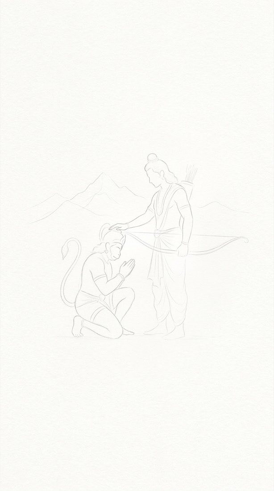
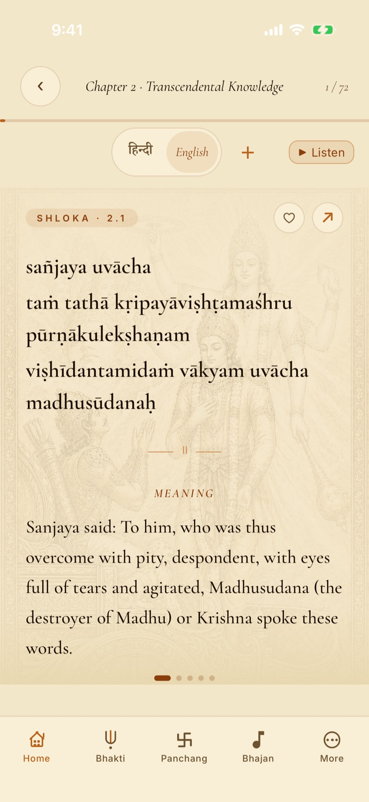
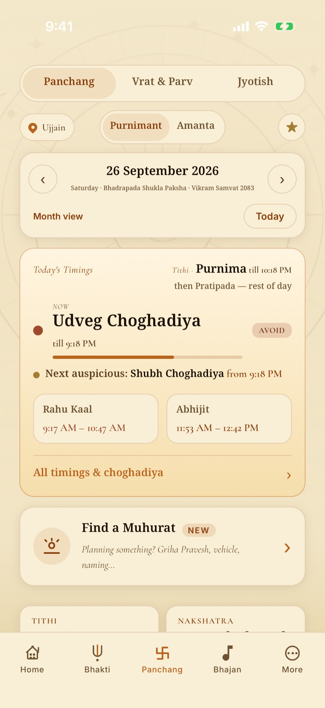
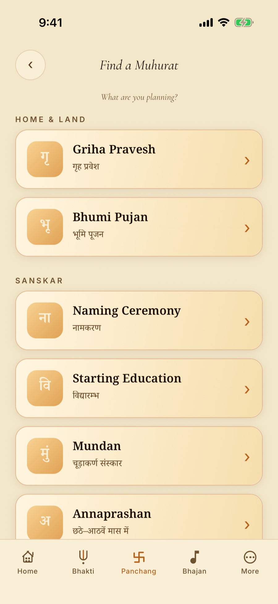
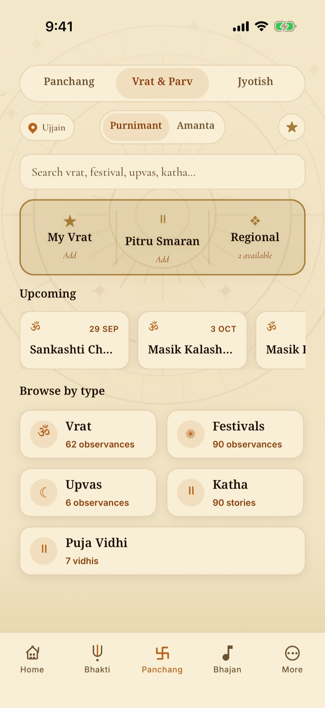
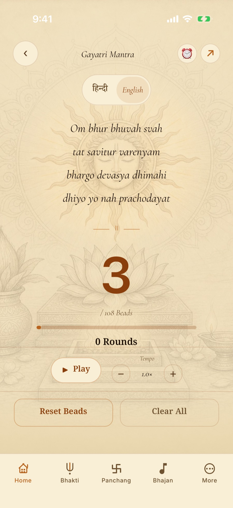
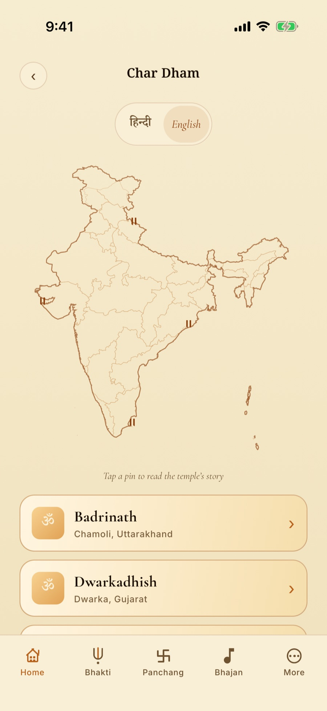
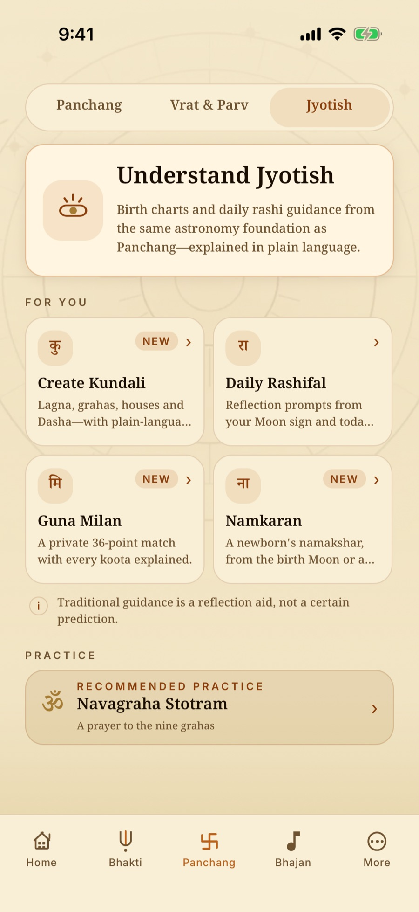

वेदांश
Vedansh
Bhagavad Gita, Panchang & japa
A portion of the Vedas, carried in your pocket. Sacred texts in a reader that behaves like a book, a Panchang computed for your city, and a practice you keep.

- 701Shlokas of the Gita
- 90Vrat & festival kathas
- 4Reading languages
- 36Gunas in a Milan
The sacred library
A reader that behaves like a book
All eighteen chapters and 701 shlokas of the Bhagavad Gita, with meaning and commentary. Sundarkand and Ramcharitmanas selections, Vishnu Sahasranama, chalisas, aartis, stotrams, and sanskar for children — one verse to a page, on parchment, in the script you actually read.
- Every verse in Hindi and English — plus Gujarati and Kannada
- IAST transliteration for Sanskrit texts
- Swipe from verse to verse; resume where you left off
- Adjustable reading size, bookmarks, shareable verse cards
- Instant search across the whole library

Panchang & Muhurat
The day, computed for your city
Tithi, nakshatra, yoga, karana and sunrise from a real astronomy engine — not a lookup table. Purnimant and Amanta systems, Vikram Samvat, and a full month calendar you can move through.
- Daily Muhurat: Choghadiya, Rahu Kaal and Abhijit at a glance
- 62 vrats and 90 festivals — follow the ones you observe
- Gentle reminders for the days you keep
- Location is optional; a city picker (Ujjain by default) works without it

Muhurat
A good hour for the thing you are planning
Choghadiya through the day is one thing; choosing a date is another. Tell Vedansh what you are planning and it searches ahead for the hours that suit it, with the reasoning shown rather than asserted.
- Griha Pravesh, Bhumi Pujan, vehicle purchase, and the sanskars — naming, vidyarambh, mundan, annaprashan
- Every window explained: nakshatra, tithi, vara and lagna, each marked favourable or not
- Sarvartha Siddhi and the other auspicious yogas called out for the day
- Follow a muhurat and it comes back as a reminder
- Rahu Kaal and Abhijit for today, always a tap away

Vrat, katha & vidhi
The fasts you keep, and why
Follow the vrats you observe and Vedansh carries them through the year — each with its katha to read and its vidhi to follow, so the day is not just marked on a calendar but understood.
- Follow the vrats you keep; the app tracks them across the year
- Optional reminders for the days you follow
- 90 kathas across the vrats and festivals, and 7 puja vidhis
- Vidhi in Hindi and English: how the fast is kept, step by step
- Pitru Paksha with its own kathas, and Daan kathas besides

Daily sadhana
A practice you actually keep
Build a daily or weekday routine with the right deity for each day. Take a Sankalp — a guided programme of four to forty-one days — and let the app carry you to completion.
- Sankalp programmes from 4 to 41 days, tracked to the end
- A digital bead counter for 108-bead mala rounds
- Japam alarms: wake to Om Namah Shivaya, the Gayatri Mantra or the Hare Krishna mahamantra — with repeat days and skip-a-day
- Sadhak profile: reads, beads, rounds and streaks

Theerth & listening
Pilgrimage, and a voice to sit with
Explore India’s dhams on a real-geography map — by state, by category, or along a yatra — each with sourced temple stories. And a calm built-in player for bhajans, mantras and aartis that keeps going in the background.
- Dhams on real geography, browsable by state, category or yatra
- Sourced stories for each site
- Bhajans, mantras and aartis in a built-in player
- Background audio, so listening survives a locked screen

Jyotish
Kundali, and a match read honestly
Birth charts and rashi guidance from the same astronomy foundation as the Panchang, explained in plain language — and Guna Milan, the 36-point match, with every koota shown and reasoned rather than reduced to a verdict.
- Kundali: lagna, grahas, houses and Dasha, with a full written report
- Guna Milan: a private 36-point match, every koota explained
- Namkaran: a newborn's namakshar from the birth Moon
- Daily Rashifal: reflection prompts from your Moon sign
- Offered as a reflection aid, not a certain prediction — the app says so too

Also inside
And a good deal more
The folios above are the daily heart of the app. These come with it.
- Sanskar — the samskaras, written for children to read
- Good habits — small daily disciplines, tracked
- Home-screen widgets — the panchang, a verse, or your japam count
- Search — one field across every text in the library
- Daan kathas — the stories behind giving
- Pitru Paksha — shraddha days, smaran and their kathas
Questions
Asked often
Is Vedansh free?
Yes. There is no account to create and nothing to subscribe to.
Which texts are in Vedansh?
The complete Bhagavad Gita — all eighteen chapters and 701 shlokas with meaning and commentary — along with Sundarkand and Ramcharitmanas selections, Vishnu Sahasranama, chalisas, aartis, stotrams, kavacham, ashtakam and suktam, and sanskar readings for children.
Does the Panchang work for my city?
Yes. Tithi, nakshatra, yoga, karana and sunrise are computed for your location, or for a city you pick — Ujjain is the default. Both the Purnimant and Amanta month systems are supported, with Vikram Samvat and a full month calendar.
Can Vedansh match two kundalis?
Yes. Guna Milan gives a private 36-point match with every koota explained rather than just a score. The app also creates a Kundali with a written report, suggests a namakshar for Namkaran, and offers a daily Rashifal — all presented as a reflection aid, not a certain prediction.
Which languages can I read in?
Hindi (Devanagari) and English on every verse, with Gujarati and Kannada as further reading languages. Sanskrit texts also show IAST transliteration.
Is Vedansh on Android and iPhone?
Both. It is on the App Store and Google Play, and vedansh.app/get sends you to whichever store fits your phone.
Begin today’s reading
Free. All texts are drawn from public-domain Hindu classics, presented with reverence for personal study and devotion.